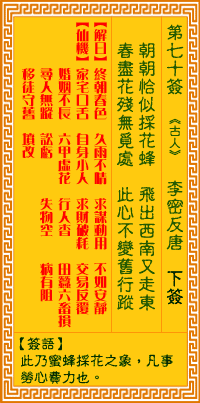

观音灵签第七十签 【李密反唐】 |
 | |||
朝朝役役恰如蜂 飞来飞去西复东 春暮花残无觅处 此身不恋旧丛中 |
||||
| 【吉凶】 | 下下签 | 【宫位】 | 辰宫 | |
| 【签语】 | 此卦蜜蜂采花之象，凡事劳心费力也。 | |||
| 【解曰】 | 终朝春色 久雨不晴 求谋动用 不如安静 | |||
| 【仙机】 | 此签家宅口舌，自身小人，求财破耗，交易反覆，婚姻不长，六甲虚惊，行人杳，田蚕六畜损，寻人无踪，讼亏，失物空，病有阻，移徙守旧，山坟改。 | |||
| 【详解】 | 犹如成日劳苦奔波的蜂儿，自东向西，又自西向东地飞来飞去;但是春残花谢，哪里还找得到蜜可采呢?就不必再一心眷恋旧花丛了吧! 役役终朝，暗雨不清，用尽机谋，争加寂寞。此签游蜂采花之象，凡事劳而无功。 本签者游蜂采花之象。凡事劳而无功者。飞来飞去而复东。春届暮节花残也无其觅处。栖身之所。交易。婚姻。求财。六畜。生产。皆无一是处。在此苦境之时。 最宜修吾身。积吾善。行布施。善吾之言行。方能有转机。易言之。役役终朝暗雨不清用尽机谋争加寂寞者。 此签有”事与愿违”之意。奉劝当事人，勿一厢情愿。在与人沟通时，切忌心直口快、口不择言。与其直接，不如在说话之前，思量再三，婉转有礼的表达其意。 如果一开口就让对方觉得不舒服，事情岂不是已经失败了一半，要再补救，可能备加困难。须知本身热心是善，但在听取他人言论之时，不应全部信以为真，宜用 智慧来判断真假、才能明辨是非。不要自作聪明，认为”事情就是如此”，否则恐遭他人利用，奔波劳碌，还得罪了不相干的人，结果却是白忙一场。凡事勿先入 为主，免得乐极生悲。 | |||
| 【典故】 | 李密是隋朝末年，反抗隋炀帝的瓦岗军首领，自称魏王，大将有秦琼、单雄信、程咬金等英雄好汉。后众叛亲离，自己和王伯当投靠唐王李渊，并娶了李仁公的公主为妻，安享荣华富贵，但他仍不满足，杀了妻子而反唐，和王伯当一起被乱箭射死，死时三十七岁 | |||